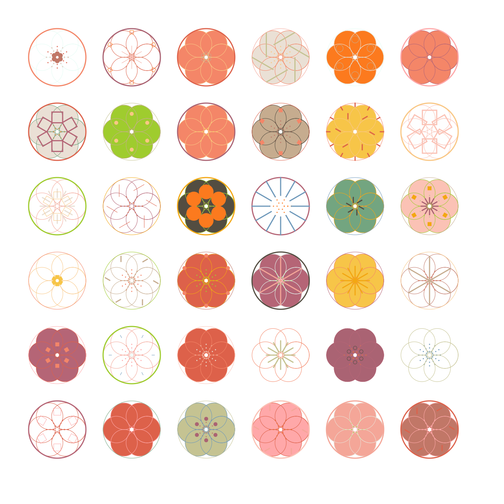

code in p5js, it is a-generative-art.
Born after 2000 years for me, the world's greatest influence on our generation is technology, our lives are
filled with the shadow of technology. Computers have taken up residence in the technology of our culture. In the
article "Screen Record", the author points out that the changes computer technology is making in our lives can
be understood in two different ways, one being that computers are bringing changes to the way we perceive and
process data. On the other hand, the development of technology has brought us experiences from the Internet to
touch screens and interactive video games.
My work "Yume no Hana" is derived from the Japanese pronunciation of "Dream flower". This is my first attempt
and exposure to generative art, to think in a different way to form art. Compared to previous forms of art, this
time it was more like I made the rules and then the computer generated the work according to the rules I
specified.
